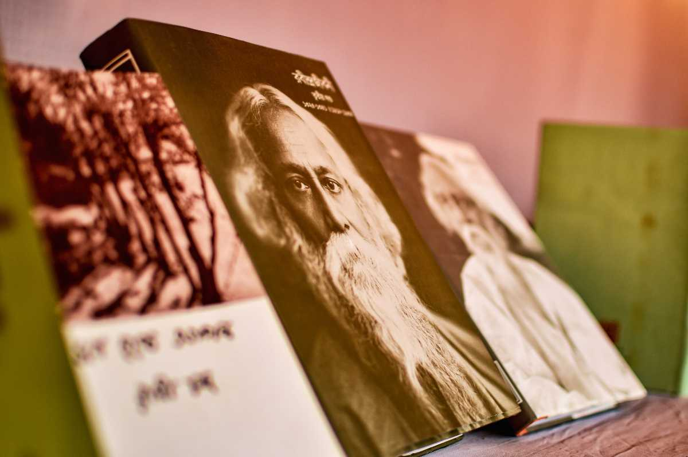
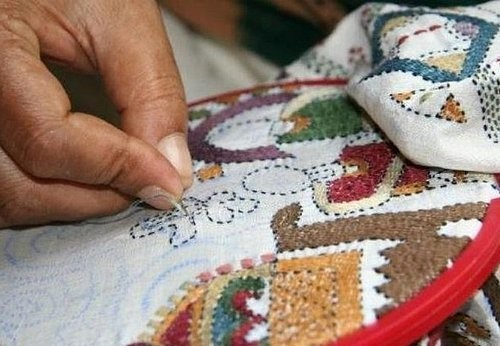
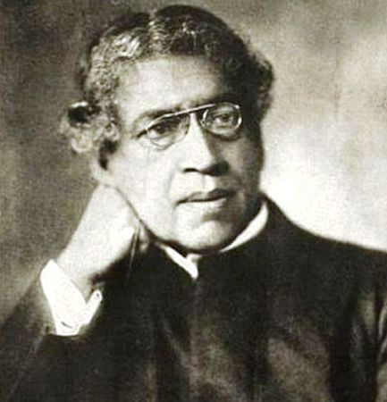
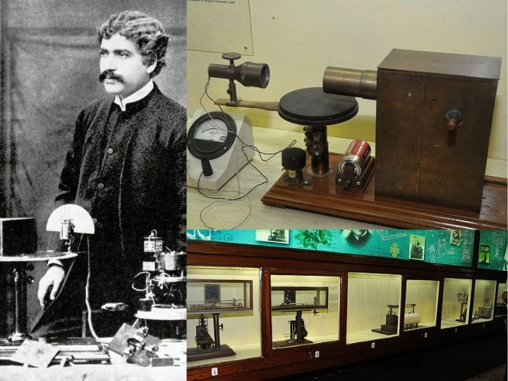
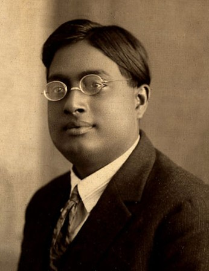
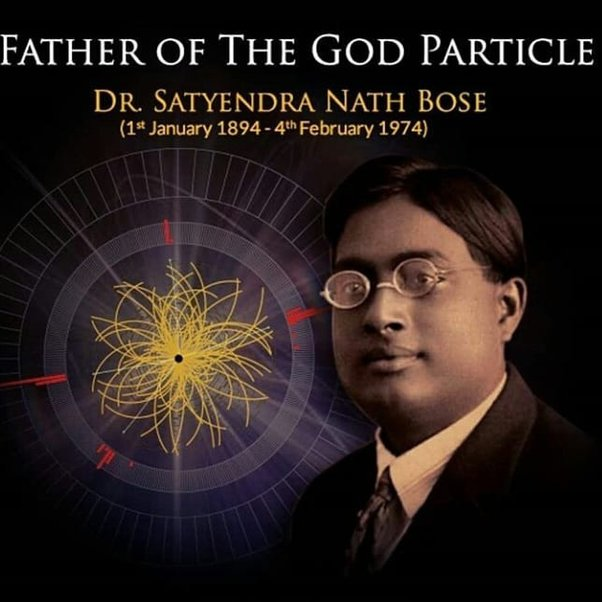
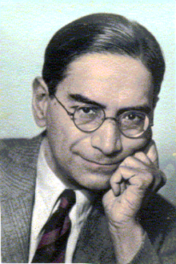
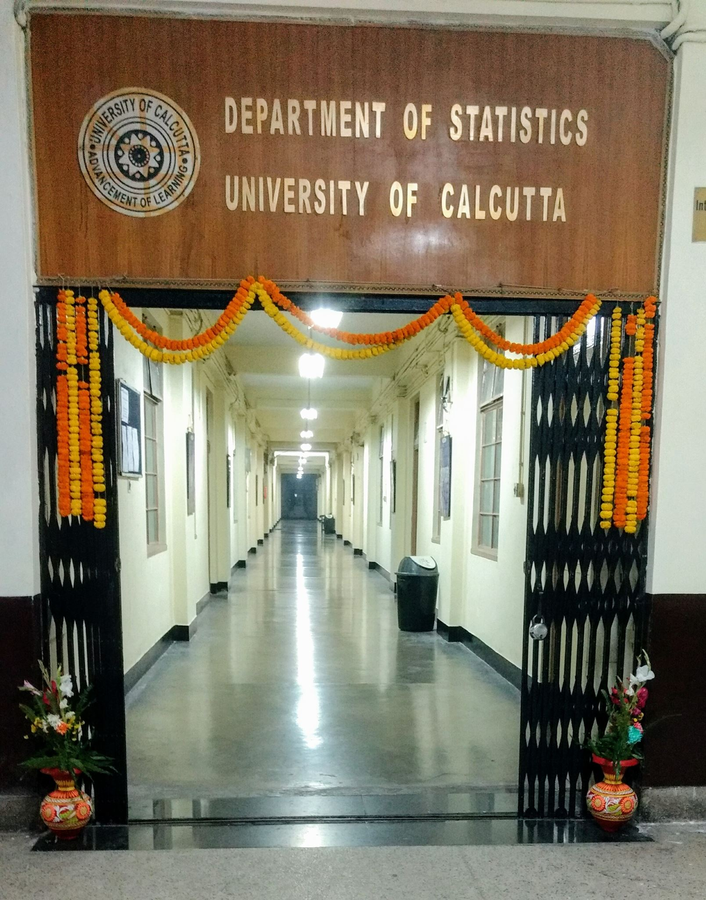
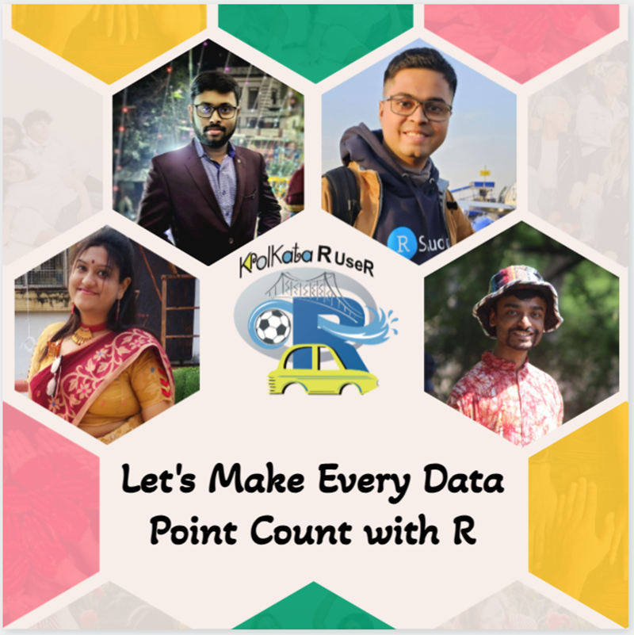

Kolkata’s Cultural and Intellectual Vibrancy
Kolkata, often hailed as the “City of Joy,” stands as a beacon of rich cultural heritage and intellectual vibrancy in India. Throughout its history, Kolkata has been a melting pot of diverse cultures, traditions, and ideas, fostering an environment conducive to the flourishing of arts, sciences, and intellectual pursuits. At the heart of Kolkata’s cultural tapestry lies a deep reverence for literature, music, art, and philosophy.
The city’s bustling streets are adorned with architectural marvels that speak to its colonial past and indigenous influences, serving as tangible reminders of Kolkata’s cultural legacy. From the iconic Victoria Memorial to the majestic Howrah Bridge, Kolkata’s landmarks reflect the city’s eclectic blend of heritage and modernity.


Furthermore, Kolkata’s intellectual vibrancy extends beyond the realms of science and technology to encompass a wide array of disciplines, including philosophy, literature, and social sciences. Figures like Rabindranath Tagore, Bankim Chandra Chattopadhyay, and Swami Vivekananda have left an indelible imprint on Kolkata’s cultural landscape, shaping the city’s identity as a crucible of creativity and intellectual ferment.
Contributions of Visionary Personalities
Kolkata owes much of its intellectual vibrancy to luminaries like Sir Jagadish Chandra Bose, whose groundbreaking work in physics and biology, including experiments with radio waves and the study of plant responses, reshaped our understanding of the natural world.


Satyendra Nath Bose, a prominent mathematician and physicist from Kolkata, collaborated with Albert Einstein to develop Bose-Einstein statistics and Bose-Einstein condensate, fundamental concepts in quantum physics. The discovery of Higgs-Boson particle, which played a crucial role in Standard Model in particle physics, stands as another testament to the profound impact of Indian scientist on the forefront of astrophysics and cosmology.


Kolkata’s Intellectual Landscape and Statistical Legacy
Establishment of Indian Statistical Institute (ISI) & P.C. Mahalanobis
In the realm of statistics, Kolkata boasts the towering figure of Prasanta Chandra Mahalanobis, whose pioneering contributions laid the groundwork for modern statistical theory and its application in diverse fields.

Alongside other leading statisticians, Mahalanobis (often referred to as the father of modern statistics in India) founded the Indian Statistical Institute (ISI) in Kolkata in 1931, becoming a hub for statistical research and education. His development of the Mahalanobis distance and his pioneering work in sample surveys revolutionized statistical methodology, earned him global recognition.
ISI’s origin can be traced back to the Statistical Laboratory in Presidency College, Kolkata (now Presidency University), set up by Mahalanobis, who worked in the Physics Department of the college in the 1920s. An informal group developed in the Statistical Laboratory, which was located in his room at the Presidency College, Calcutta.

The institute was initially in the Physics Department of the Presidency College; its expenditure in the first year was ₹238. It gradually grew with the pioneering work of a group of his colleagues, including S. S. Bose, J. M. Sengupta, R. C. Bose, S. N. Roy, K. R. Nair, R. R. Bahadur, Gopinath Kallianpur, D. B. Lahiri and C. R. Rao.
Unraveling Kolkata’s Statistical Heritage
A Chronicle of Academic Eminence
Kolkata’s statistical history is rich and diverse, reflecting its tradition of intellectual inquiry and scientific exploration. As the capital of British India during colonial times, Kolkata became a center for statistical research and application, driven by its vibrant academic community and economic activities.
The city’s academic institutions, including the University of Calcutta became the first in Asia to offer post-graduate degree in Statistics (1941). Institutions like the Calcutta Statistical Association, founded in 1945, were pivotal in promoting the study of statistics across various fields.

These institutions became centers of excellence for statistical education and research, attracting students and scholars from across the country. In addition to academic research, Kolkata’s statistical expertise found application in various sectors, including industry, government, and public policy.
Pioneering the Path of Progress
The city’s statistical legacy extends to social and demographic studies, analyzing population dynamics, healthcare outcomes, and urban development. Statisticians play a vital role in addressing societal challenges in Kolkata’s rich cultural and diverse demographic landscape. The city’s history in statistics showcases an interplay between academic research, institutional development, and practical application, contributing to advancements in theory and real-world problem-solving.
Empowering Kolkata’s Academia and Enterprises
The Rise of R Programming
The widespread adoption of R programming in the city has revolutionized statistical analysis and visualization across academia and enterprises alike. Its versatility and extensive libraries make it the preferred choice for data analysis, visualization, and predictive modelling across diverse disciplines like economics, public health, environmental science and astronomy. Researchers and professionals leverage its ease of use and robustness to tackle complex data sets, driving informed decisions and addressing societal challenges with precision. In the business realm, from start-ups to corporations, R programming provides scalable solutions for market research, customer segmentation, and strategic decision-making by uncovering hidden patterns in vast data sets.
The Foundation of the Kolkata R User Group (KRUG) for Data Literacy
The inception of Kolkata R UseR group marks the unique convergence of passion, expertise and a shared vision intersecting with vibrant culture of the city for advancing data science and statistics within our community. From analyzing cultural trends in the arts and entertainment industry to implementing data-driven approaches for heritage conservation and urban planning, Kolkata’s creative minds seamlessly integrate statistics and technology into cultural endeavors.
Founded by two ardent R enthusiasts, Samrit Pramanik, a seasoned data scientist equipped with an MSc in Statistics from Calcutta University, and his friend Abhirup Moitra, currently pursuing MSc in Math with Data Science from The Institute of Mathematics and Applications (IMA) in Bhubaneswar, our group sets out on a mission to cultivate a dynamic ecosystem where R users of all level can thrive. We are also delighted to welcome two more passionate individuals who share our dedication to R and its transformative potential. Anwesha Roy, a proficient statistical programmer, injects practical industry insights. Meanwhile, Arghya Mukherjee, on the path to a PhD scholar from IIT Kanpur, infuses our community with cutting-edge research perspective.

The integration of R programming and statistics elevates Kolkata as a hub of intellectual inquiry and scientific exploration. R complements statistical methodologies, enhancing analysis, modeling, and visualization. Its indispensability spans academia and industry, reflecting Kolkata’s commitment to advancing statistical knowledge. The mission and vision Kolkata R User Group (KRUG) plays a vital role in promoting R programming across educational institutions in the city and suburban areas of West Bengal, fostering data literacy and analytical thinking. Their efforts enrich Kolkata’s cultural and intellectual landscape for future generations.
Let’s Make Every Data Point Count with R!